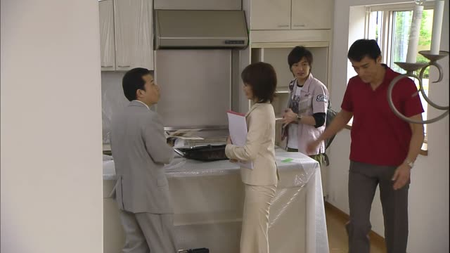
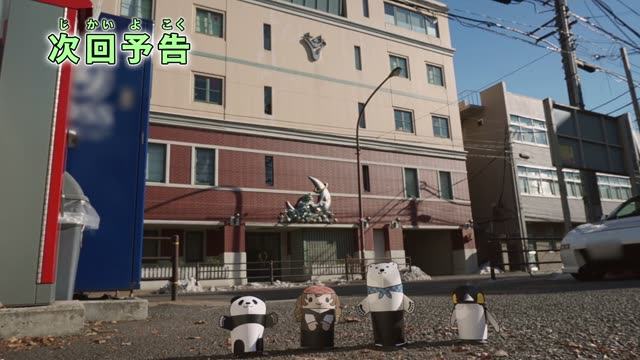
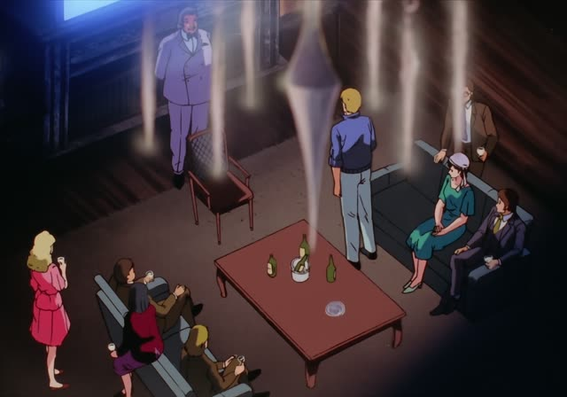
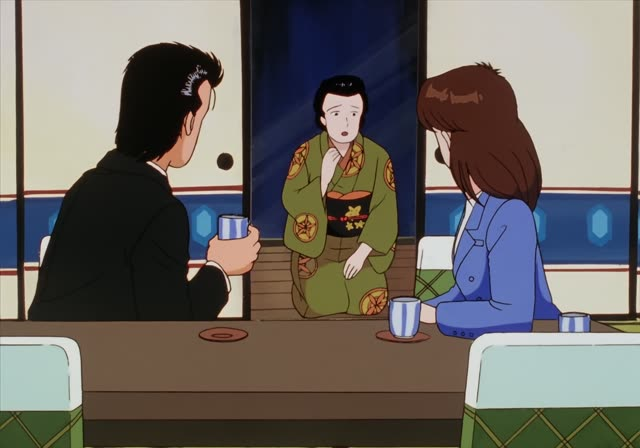
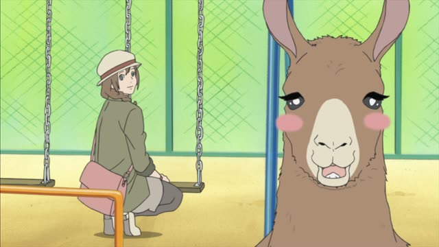

お～する
Death Note · Episode 31
では、お待ちしています。
"Then I'll be waiting for your call."
お + ます-stem + する is the humble pattern: you do something for someone you respect. 待ちます → お待ちします, 持ちます → お持ちします. Even more humble: お～いたします.
On this card, Light gives his number and says he'll be waiting. お待ちしています: humble "I'll wait". ます makes it polite.
For する-nouns it's ご: ご相談します, ご案内します.

Kekkon Dekinai Otoko · Episode 1
カバン、お持ちして。
"Carry his bag for him." [to his assistant]
On this card, the doctor tells his assistant to carry the guest's bag. お持ちする: carry it as a service.
Quick Examples
A waiter.
すぐにお持ちします。
"I'll bring it right away."
PoliteEnding an email.
ご連絡お待ちしております。
"I look forward to hearing from you."
PoliteA guide.
お部屋までご案内します。
"I'll show you to your room."
ご + する-noun.
PoliteBefore a question.
ちょっとお聞きしたいんですが。
"I'd like to ask you something."
PoliteWith and without
荷物を持ちます。
"I'll carry the luggage." Polite.
お荷物、お持ちします。
"Let me carry your luggage." Humble service.
Examples from Media

Shirokuma Cafe · Episode 48
今週のシロクマカフェをお送りします。
"Here's this week's Shirokuma Cafe."
The show's opening line.

Oishinbo · Episode 28
さあさ、どうぞ。お待ちしてました。
"Come in, please. We've been expecting you."

Oishinbo · Episode 12
こんなみっともない姿をお見せして
"Showing you such a disgraceful sight"
Death Note · Episode 10
それでも聞けることなら、なんでもお聞きします。
"Still, I'll ask anything I can."
Kekkon Dekinai Otoko · Episode 1
すごい優秀な建築家さんだってお聞きしてました。
"I'd heard you're a brilliant architect."
1 Litre of Tears · Episode 7
ちょっとご相談したいことがありまして。
"There's something I'd like to discuss with you."
ご + する-noun.
Good Morning Call · Episode 9
お邪魔しまーす。
"Sorry to intrude!"
Said when entering someone's home.

Shirokuma Cafe · Episode 49
ご想像にお任せします。
"I'll leave that to your imagination."